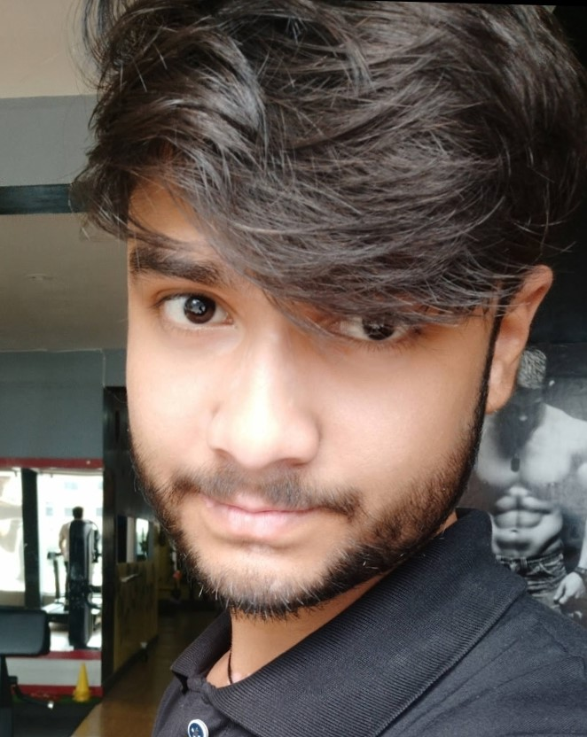

Vivek Kumar Verma

Personal Profile
I am hard working and dedicated person.
I always want to learn more things and can also adapt easily.
I am interested in web development and also in python language.
Education
- Bachlor of Science, Information Technology-University of Dr. Shyama Prasad Mukherjee(2021-2024)
Work Experience
I am a fresher with 0 work experience.
Skils & Abilities
- Web Development
- HTML5 & CSS3
- Python(GUI)
- C,C++
- Data Structure
- Data Base Management System
- Javascript
- MongoDB
- ExpressJs
- React Js
- NodeJs
- English, Hindi
- Team Player
Educational History
Marriculation
Percentage:86.3%
Passout:2018
St. Michael's School, Ranchi
Intermediate
Percentage:74.5
Passout:2020
Cambrian Public School, Ranchi
Graduation
Currently pursuing sem 3(8 cgpa till now)
CGPA:8
Dr. Shyama Prasad Mukherjee University, Ranchi
Project I Made
- A REAL TIME FACE ATTENDACE SYSTEM WITH FIREBASE DB ACCESS.
ChatBot
- A Chat Bot which can reply to us by voice and in written and can also translate in any language.
CONTACT INFORMATION
Mobile No. 7909040211
Email vkv9546@gmail.com
Address: Sunday Market PO-Ratu PS-Ratu
Ranchi, jharkhand
Pin:835222